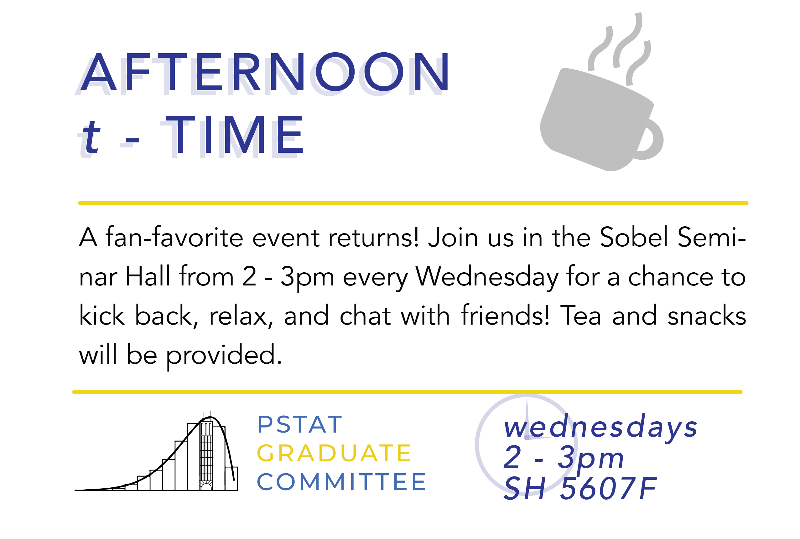

Events
Current and Upcoming Events (as of Fall Quarter 2022)
|  |
Archive of Events:
Archive: Fall 2020
Archive: Winter 2021
Archive: Fall 2020
Fun Fact: Fall 2020 marked our inaugural quarter as a committee! (This is also why our flyers for this quarter have a bit of an, ahem, retro feel…)
Our First Social Event: Graduate Student Happy Hour! We’re excited to announce our first social event of the semester! On Monday September 28, 2020 at 7:30pm, we will be hosting a Graduate Students Happy Hour. There will be games, activities, and plenty of opportunities to meet your fellow PSTAT grad students! Check out our discord channel for the Zoom Link.
Our First Set of Weekly Events: Afternoon t-Time Time for t distributions - I mean, Tea! Join us every Friday at 5pm for a chance to unwind with your fellow PSTAT grad students, all over a nice cup of steaming hot tea.